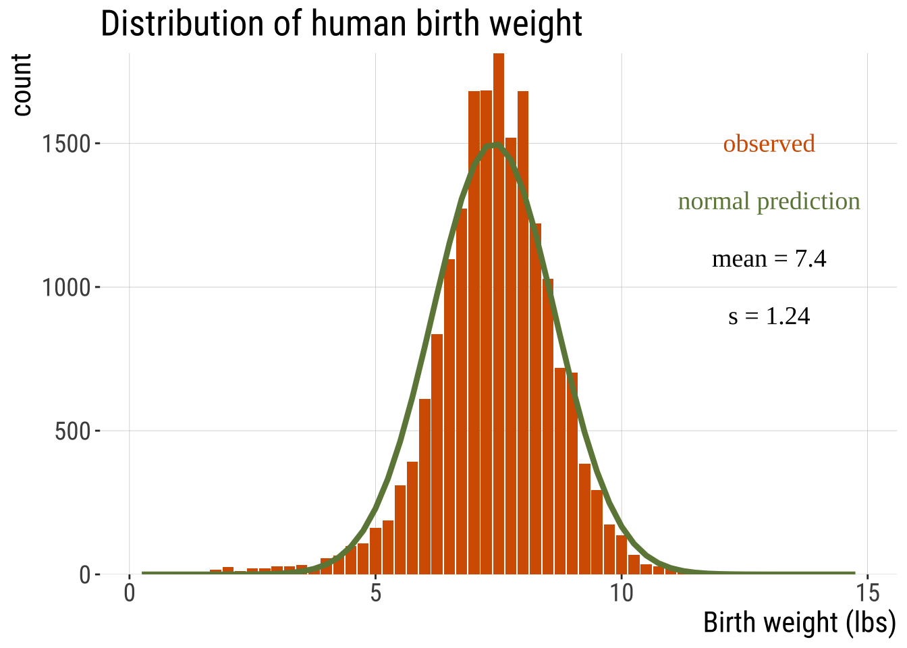
9.1. Normal Distribution
Normal Distribution| Acknowledgments to Y. Brandvain for code used in some slides
Keywords
Normal Distribution
Key Learning Goals
- Recognize that the normal distribution is common in nature (and why).
- Know how to parameterize a normal distribution.
- Know how to use the standard normal table & conduct a Z-transformation.
- Find the probability that a sample mean is within a given range.
- Explain the central limit theorem and its significance.
- Describe the difference between the standard normal distribution - Z -, and the t-distribution.
- Use the t-distribution to find the 95% confidence interval for a sample from the normal distribution.
- Test the null hypothesis that a sample mean comes from a population with some parameter value using a one-sample t-test
- Know how to carry out a one-sample t-test and when it is indicated.
Key Learning Goals (in R)
Transform non normal data to become normal
Use the
_norm()family of functions to:
- simulate random numbers from a normal distribution -
rnorm() - calculate the probability density of an observation from a specified normal distribution -
dnorm() - calculate the probability of finding a value more extreme than some number of interest from a specified normal distribution -
pnorm()
- find a specified quantile of a normal distribution with -
qnorm()
Outline
- Getting to know the normal distribution
- Sums are normally distributed
- The Normal distribution in nature
- Discrete vs continous probability distributions
- Probability mass vs probability density
- Normal distribution: definitions & properties
- Using R to calculate a probability density
- The standard Normal distribution
- The Z distribution
Get to know the normal distribution
- The normal distribution (aka the “bell curve”, aka the Gaussian) is incredibly common in the world!
- It is also mathematically convenient.
- Therefore, much of statistics is based off of the normal distribution.
Sums are normally distributed
Because most quantitative variables are sums (or averages) of a bunch of things, the normal distribution is incredibly common!
For example:
- Human height is realized as the addition of lot of genetic effects and a lot of environmental factors.
- The distance a seed moves is the sum of a lot of wind currents.
But WHY???
Why that distribution? Why is it special? Why not some other distribution? Are there other statistical distributions where this happens?
Teaser: yes, there are other distributions that are special in the same way as the Normal distribution. The Normal distribution is still the most special because:
- it requires the least math
- it is the most common in real-world situations -e.g. biology!
- notable exception: the stock market
- The full answer has to do with the central limit theorem - SOON!
Examples: The Normal Distribution in Nature
Human Birth weight
- Birth weight is (roughly) normally distributed
Data:Pethybridge et al. (1974). “Some features of the distribution of birthweight of human infants”
Human body temperature
- Body temp is (roughly) normally distributed
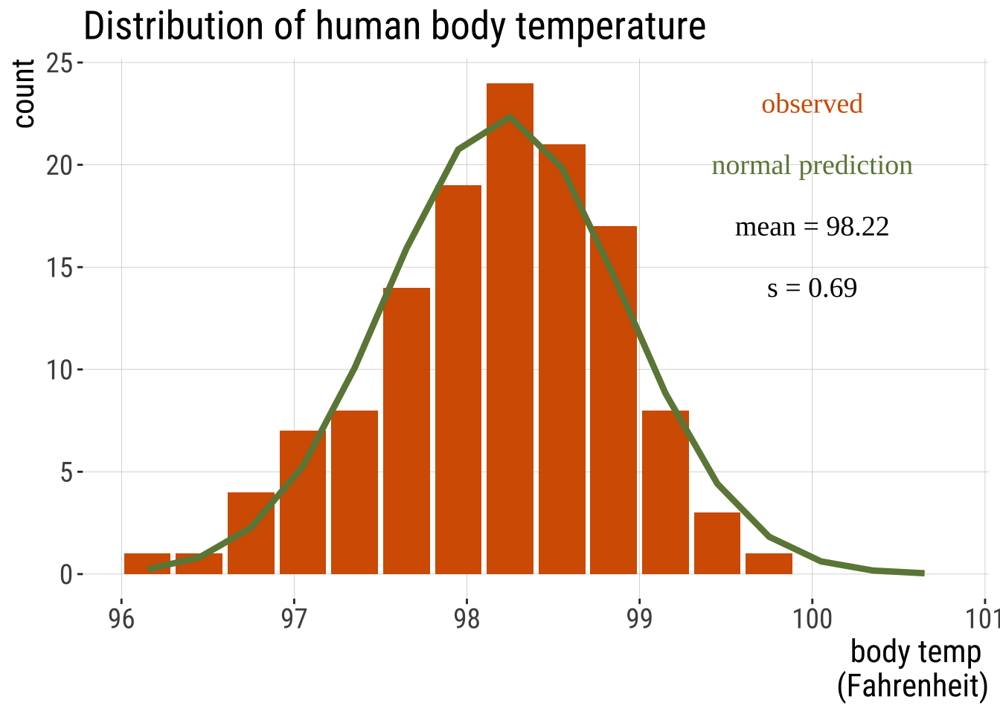
Data: Shoemaker (1996).“What’s Normal? – Temperature, Gender, and Heart Rate”
Drosophila egg number
- Drosophila egg number is (roughly) normally distributed
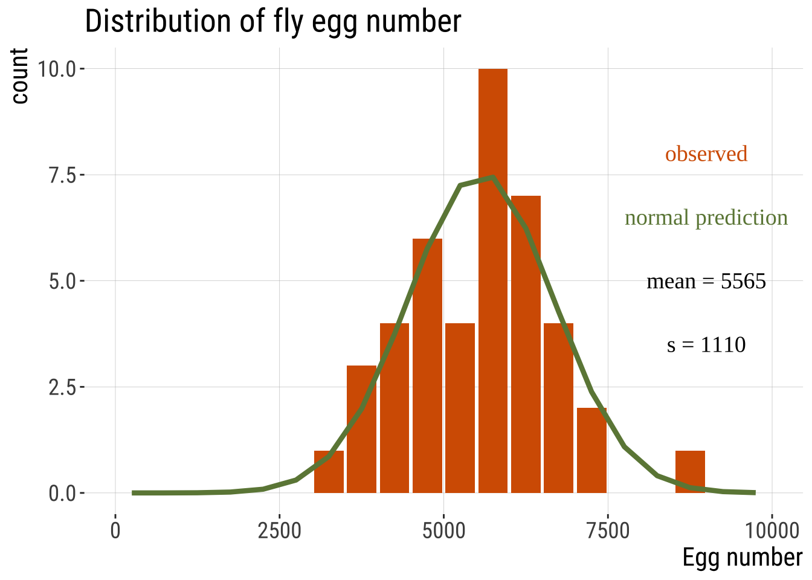
Paaby et al (2014). “A highly pleiotropic amino acid polymorphism in the Drosophila insulin receptor contributes to life-history adaptation”
The Normal Distribution: Definitions & Properties
Recap: Discrete probability distributions
- The binomial distribution is a discrete distribution
- We can write down every possible outcome (zero success, one success, etc… \(n\) successes) and calculate its probability. Adding these up will sum to one
\[\sum p_{x}=1\] * Probabilities of these possible outcomes (those which sum to one within discrete distributions) are called probability masses. * E.g. the probability of heads on a coin toss is called its probability mass.
Recap: Continuous probability distributions
- The probability of any one outcome from a continuous distribution, like the normal distribution, is infinitesimally small because there are infinite numbers in any range.
- We therefore describe continuous distributions with probability densities.
- Probability densities integrate to one: \[\int p_{x}=1\]
Warning: integrals! Don’t panic, you don’t need to integrate anything
The Normal Probability Density (1/)
- The probability density of each value \(x\) from a normal distribution with mean \(\mu\) and variance \(\sigma^2\) is:
\[f[x]=\frac{1}{\sqrt{2\pi\sigma^2}}e^{-\frac{(x-\mu)^2}{2\sigma^2}}\] * Thus, across sample space, probability densities integrate to 1, meaning
\[\int_{-\infty}^{+\infty}\frac{1}{\sqrt{2\pi\sigma^2}}e^{-\frac{(x-\mu)^2}{2\sigma^2}}=\int_{-\infty}^{+\infty}f(x)dx=1\] , meaning the integral of the PDF (probability density function) over its entire range integrates to 1.
Concept check in (1/2)
- This normal distribution has points with a probability density > 1.
- We know that probabilities cannot be greater than 1, so how can this be the case?
Concept check in (2/2)
- Answer: prob. densities integrate to one, aka the area under the curve, corresponding to probabilities. (i.e., \(\int p_{x}=1\)). Individual probability densities can exceed 1 though.
- Does this mean probability densities can be <1?
- Answer: No!The probability density function is non-negative for all possible values of the random variable. The total area under the probability density function is equal to 1.
Parameters of the Normal Distribution (1/2)
\(N(\mu, \sigma^2)\): These parameters - mean and variance (or standard deviation, \(\sigma\)) - fully specify a normal distribution
\(X\sim N(\mu, \sigma)\): \(X\) is normally distributed and the distribution is specified by a mean \(\mu\) and a standard deviation \(\sigma\)
Parameters of the Normal Distribution (2/2)
- \(X\sim N(\mu, \sigma)\): \(X\) is normally distributed; normal is specified by \(\mu\) and \(\sigma\)
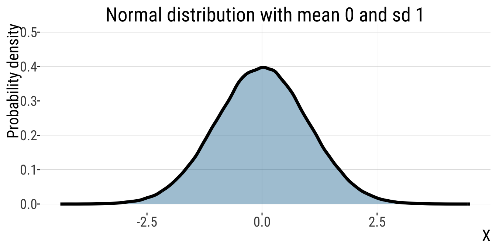
Visualizing Probability Densities
##
## Attaching package: 'reshape2'
## The following object is masked from 'package:tidyr':
##
## smiths
## No id variables; using all as measure variables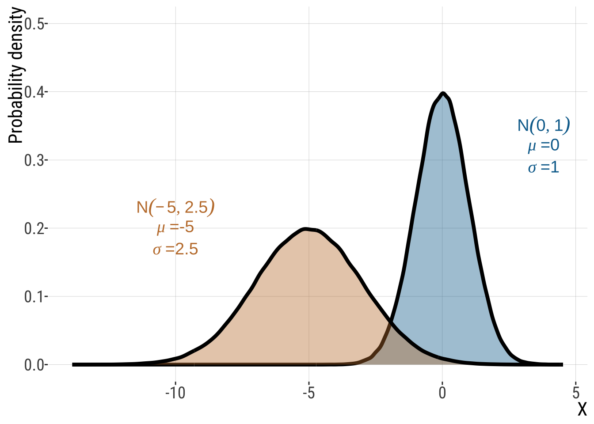
A Normal Distribution is symmetric around its mean
## Warning: Using `size` aesthetic for lines was deprecated in ggplot2 3.4.0.
## ℹ Please use `linewidth` instead.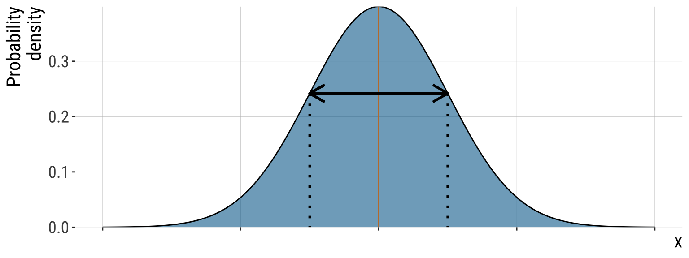
Properties of the normal
- The normal is symmetric around its mean
- The normal has a single mode
- The probability density is highest exactly at the mean.
- It follows that the mean, median, and mode are all equal to each other for the normal distribution!
Probability that \(X\) falls in a given range (1/2)
- Probability that \(X\) lies between two values, \(a\) and \(b\):
\[P[a<X<b]=\int_{a}^{b}\frac{1}{\sqrt{2\pi\sigma^2}}e^{-\frac{(x-\mu)^2}{2\sigma^2}}dx\]
Ouch…
Probability that \(X\) falls in a given range (2/2)
- Some helpful (approximate) ranges:
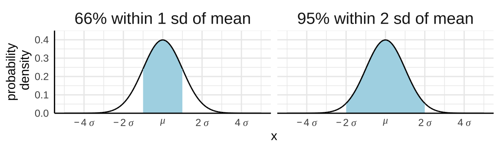
- These are approximations!
Nerd humor

https://imgs.xkcd.com/comics/normal_distribution.png
Using R to calculate a probability density (1/2)
- Like the
dbinom()function calculates the probability of a given observation from a binomial distribution by doing the math of the binomial distribution for us… -
dnorm()calculates the probability density of an observation from a normal distribution by plugging and chugging through the equation shown.
Using R to calculate a probability density (2/2)
For example, for x=0.4 for \(N(0.5, 0.01)\), the probability density is: \(f[x]=\frac{1}{\sqrt{2\pi\sigma^2}}e^{-\frac{(x-\mu)^2}{2\sigma^2}}=>f[0.4]=\frac{1}{\sqrt{2\pi0.01}}e^{-\frac{(0.01}{0.02}}\approx 2.42\)
dnorm() can do this for you!
## [1] 2.42The standard normal distribution
A normal with \(\mu=0\) and \(\sigma=1\)
One Normal Distribution to Rule Them (1/2)
- Normal distributions can have distinct values of \(\mu\) and \(\sigma\) but must have the same shape.
- Of the infinite normal distributions, the standard normal distribution – a normal distribution with \(\mu=0\) and \(\sigma=1\) is particularly useful.
One Normal Distribution to Rule Them (2/2)
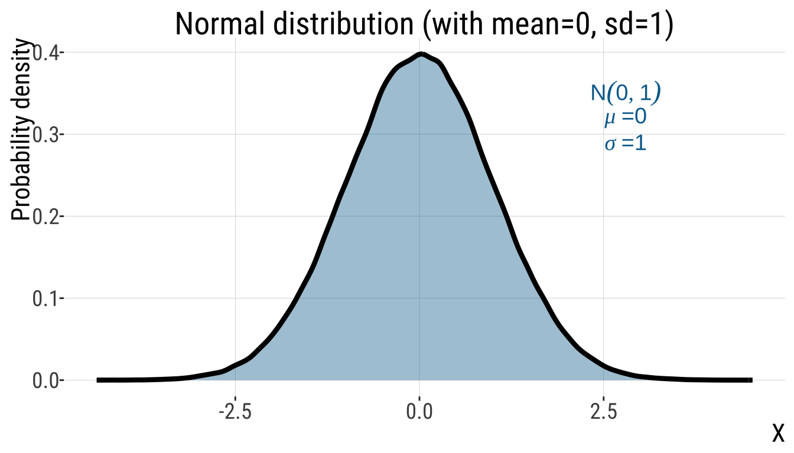
The \(Z\)-distribution
The \(Z\)-distribution describes the probability that a random draw from the standard normal is greater than a given value.
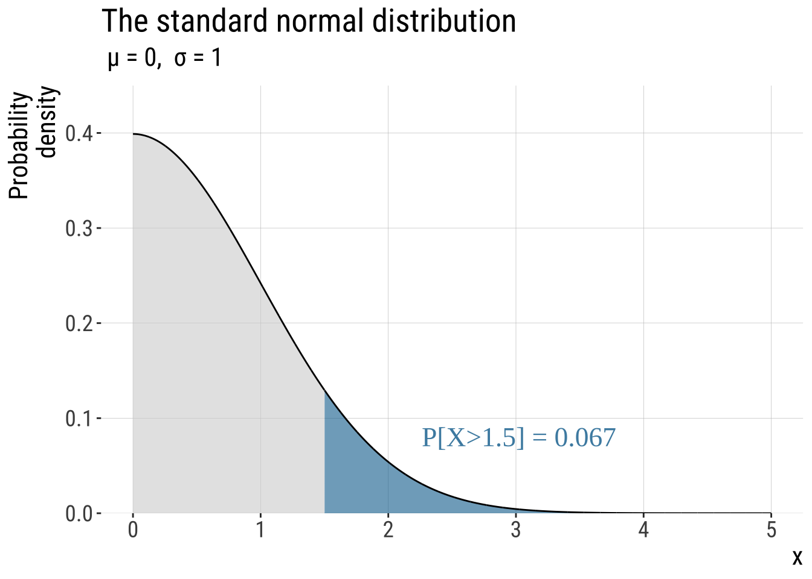
In R pnorm(x = 1.5, lower.tail = FALSE) = 0.067 In R: pnorm(q = 1.5, lower.tail = F): 0.0668
The Standard Normal Table (1/)
- We use the symbol \(Z\) to indicate a variable that has a standard normal distribution.
- The standard normal table: gives the probability of getting a random draw from a standard normal distribution greater than a given value
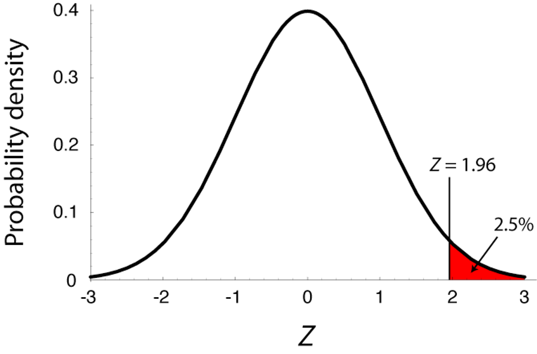
The Standard Normal Table (2/)
- Rows contain the 1st two digits of Z
- Columns contain the 3rd digit
- The value is probability that a random draw from the standard normal is \(>Z\). E.g. \(P(Z>1.5)\)
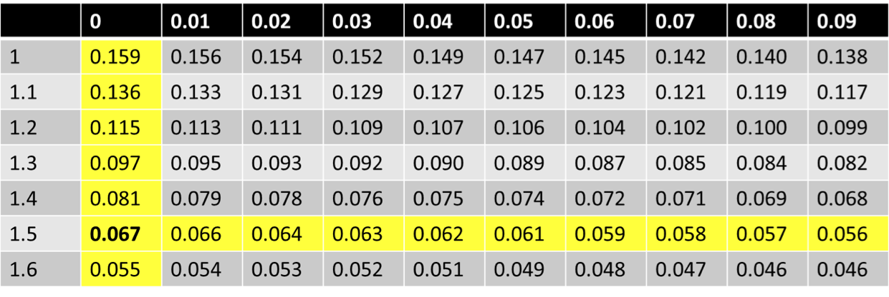
Using the Z distribution
The standard normal is symmetric about zero, so: \[𝑃[𝑋 < -Z]=P[Z > X]\], i.e. the probability that a random sample, \(X\), is less than \(-Z\) equals the probability that a random sample is greater than \(Z\).
The normal integrates to one, so: \[P[X < Z]=1 − P[X > Z]\], i.e. the probability that a random sample is less than \(Z\) equals one minus the probability that a random sample is greater than \(Z\).
The Z transform
- Any normal distribution can be converted to the standard normal distribution by subtracting the population mean \(\mu\) from each value and dividing by the population standard deviation \(\sigma\):
\[Z=\frac{X-\mu}{\sigma}\] * E.g., by a \(Z\) transform, a value of \(X=0.4\) from a normal distribution with \(\mu=0.5\) and \(\sigma=0.1\) will be \(\frac{0.4-0.5}{0.1}=\frac{-0.1}{0.1}=-1\)
Z is called a “standard normal deviate”
Why use the Z transform?
- The \(Z\) transform is useful because we can then have a simple way to talk about results on a common scale.
- I think of a \(Z\) value as the number of standard deviations between an observation and the population mean.
\[Z=\frac{X-\mu}{\sigma}\]
The benefits are similar to using the CV to compare standard deviations across different scales
The other advantage: the standard Normal table
Example: British spies
British spies (1/)
- MI5 (the UK’s CIA) says a man has to be shorter than 180.3 cm tall to be a spy.
- Height of British men is normally distributed with mean 177.0 cm, and standard deviation 7.1cm.
- What proportion of British men are excluded from a career as a spy by this height criteria?
Let’s work on this!
British spies (2/)
- MI5 (the UK’s CIA) says a man has to be shorter than 180.3 cm tall to be a spy.
- Height of British men is normally distributed with mean 177.0 cm, and standard deviation 7.1cm.
- What proportion of British men are excluded from a career as a spy by this height criteria?
\(\mu=177\)
\(\sigma=7.1\)
What are we looking for? \(P[\text{height}>180.3|\mu=177,\sigma=7.1]=?\)
Make a rough sketch:
British spies (3/)
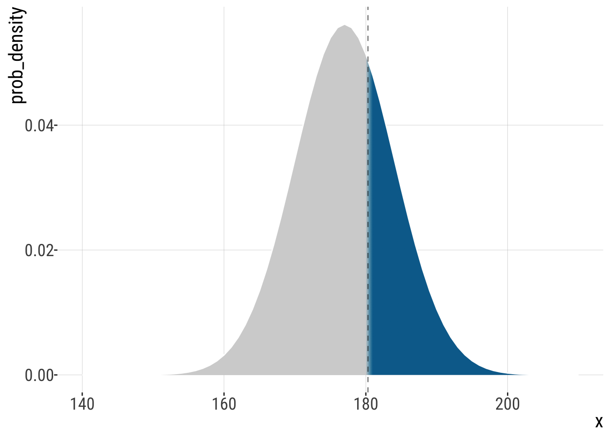
British spies (4/)
\[P[Z>180.3|\mu=177,\sigma=7.1]=?\]
- \(Z\)-transform: \[(180.3-177)/7.1=0.46\]
- Look this up in the standard normal table:
| 0 | 0.01 | 0.02 | 0.03 | 0.04 | 0.05 | 0.06 | 0.07 | 0.08 | 0.09 | |
|---|---|---|---|---|---|---|---|---|---|---|
| 0.3 | 0.382 | 0.378 | 0.374 | 0.371 | 0.367 | 0.363 | 0.359 | 0.356 | 0.352 | 0.348 |
| 0.4 | 0.345 | 0.341 | 0.337 | 0.334 | 0.330 | 0.326 | 0.323 | 0.319 | 0.316 | 0.312 |
| 0.5 | 0.309 | 0.305 | 0.302 | 0.298 | 0.295 | 0.291 | 0.288 | 0.284 | 0.281 | 0.278 |
Conclude that \(\sim 32.3\%\) of British men are too tall to be a spy.
British spies (4/)
# Probability of a random man in the UK being >= 180.3 cm tall.
pnorm(q = 180.3, mean = 177, sd = 7.1, lower.tail = FALSE)
## [1] 0.321
# probability of being <= 180.3 cm tall
pnorm(q = 180.3, mean = 177, sd = 7.1, lower.tail = TRUE)
## [1] 0.679
# or 1- P(>180.3)
1 - pnorm(q = 180.3, mean = 177, sd = 7.1, lower.tail = FALSE)
## [1] 0.679The sampling distribution of means from samples taken from a normal distribution
Sample Means From a Normal
- Means of normally distributed variables are normally distributed.
\[\mu=\bar Y, \sigma_{\bar{Y}}=\frac{\sigma}{\sqrt{n}}\] - The mean of the sample means equals μ. The standard deviation of the sample means is the standard error, and equals \(\frac{\sigma}{\sqrt{n}}\)